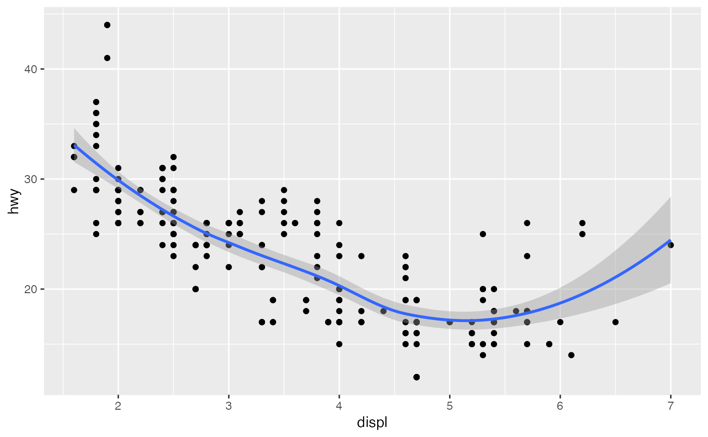
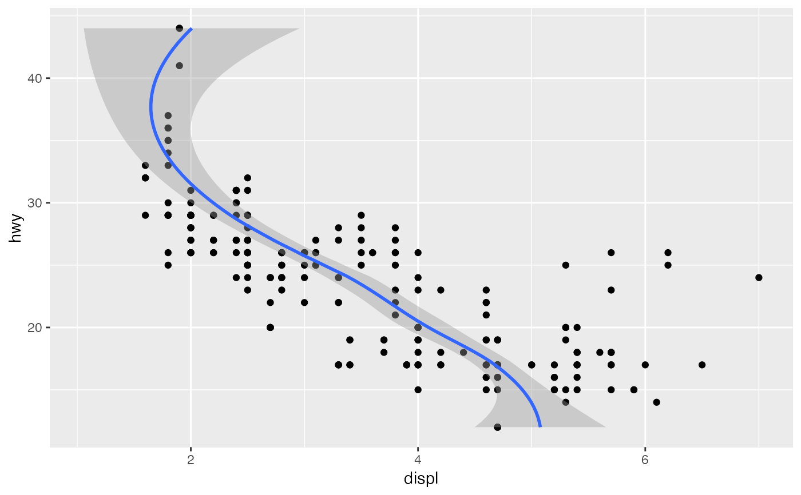
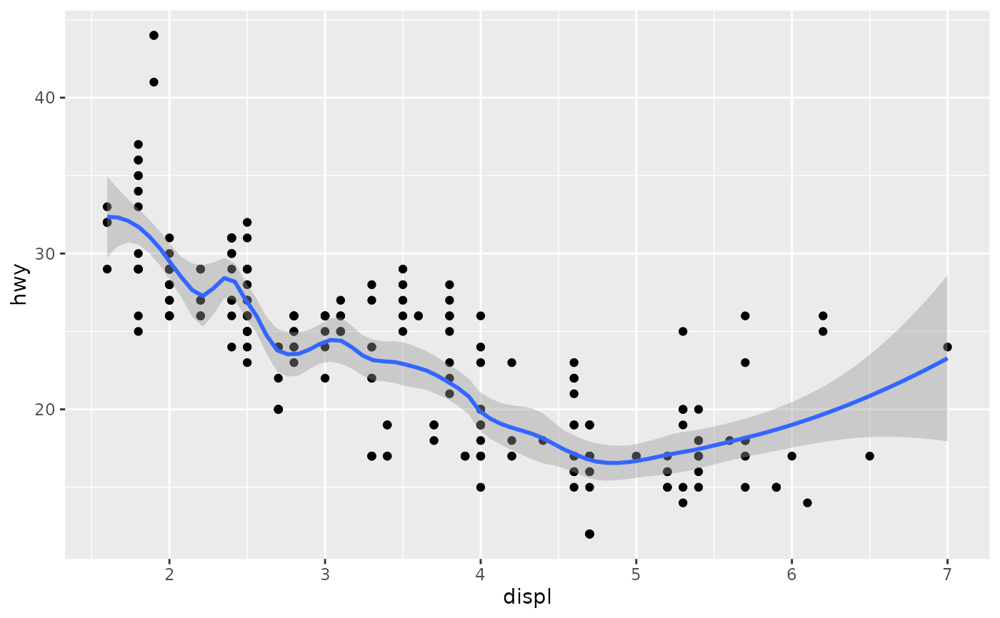
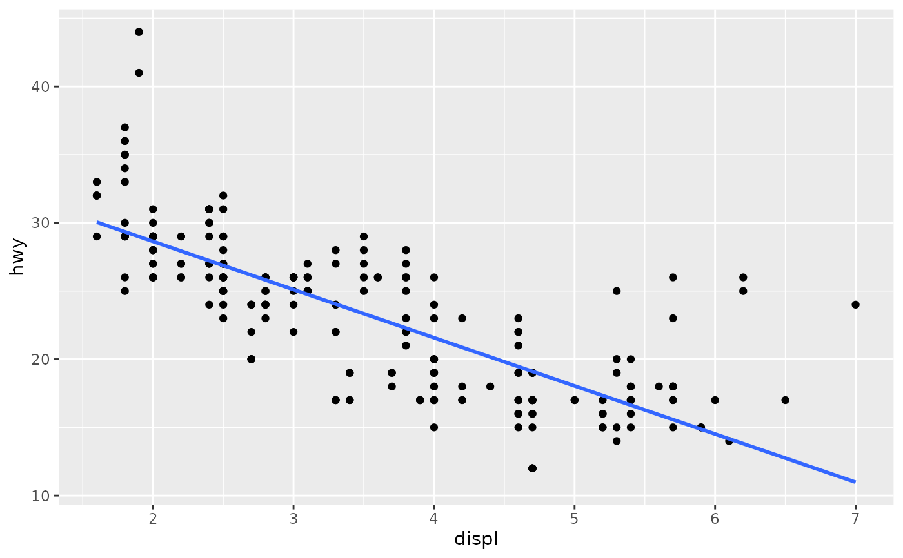
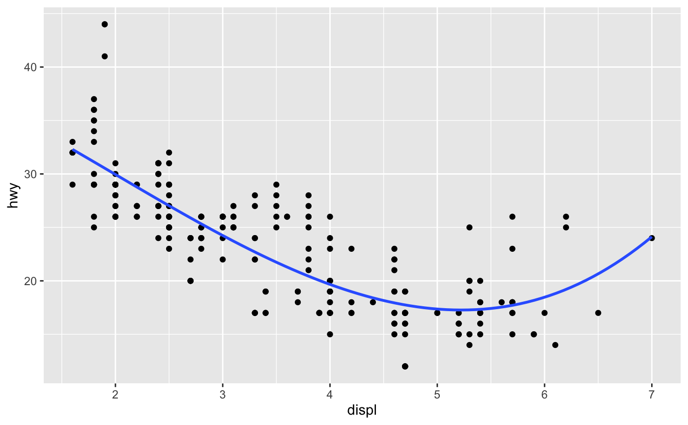
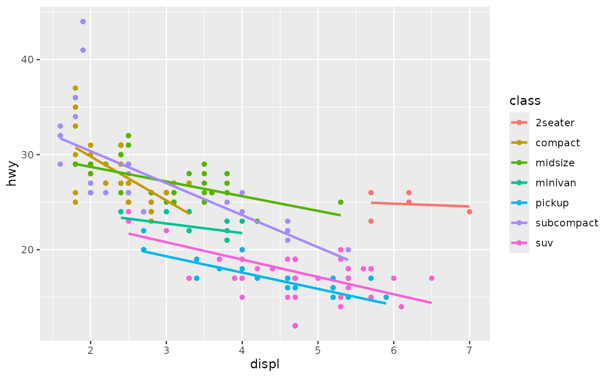
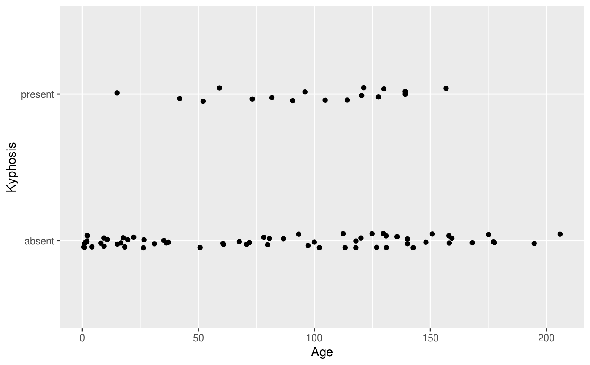
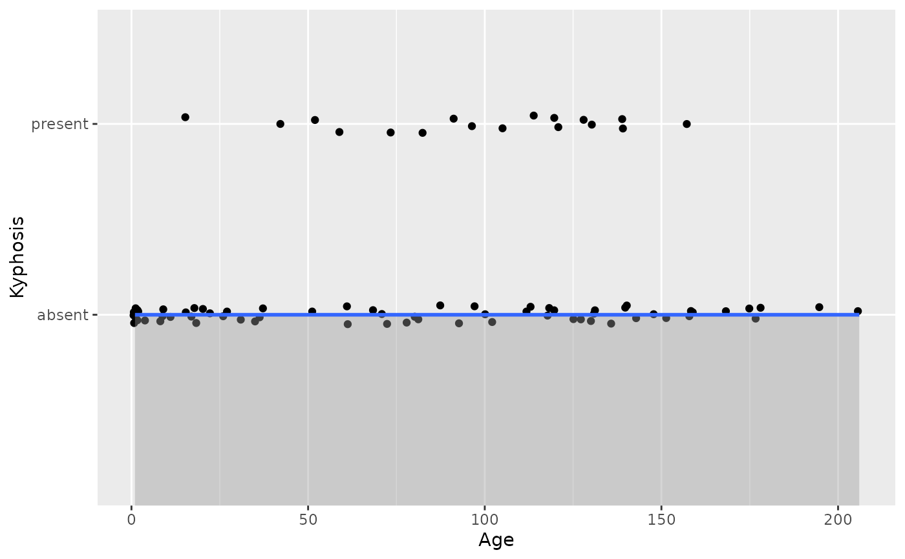
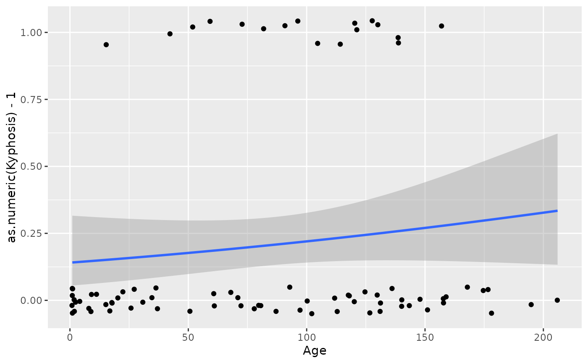
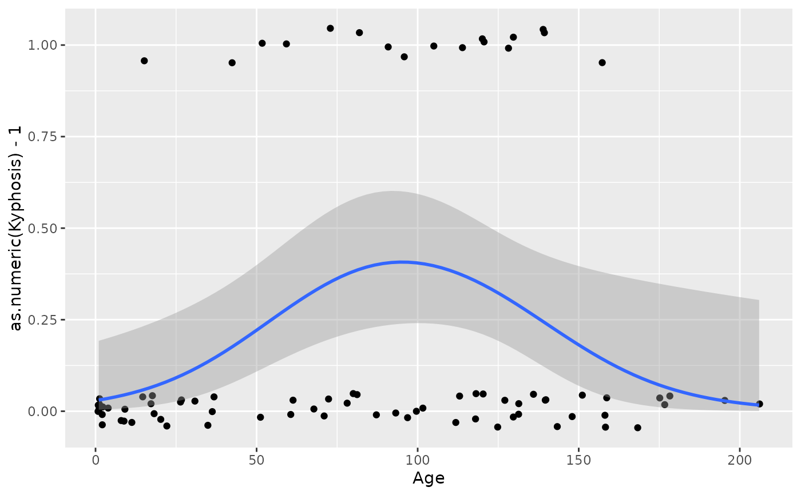

Aids the eye in seeing patterns in the presence of overplotting.
geom_smooth() and stat_smooth() are effectively aliases: they
both use the same arguments. Use stat_smooth() if you want to
display the results with a non-standard geom.
Usage
geom_smooth(
mapping = NULL,
data = NULL,
stat = "smooth",
position = "identity",
...,
method = NULL,
formula = NULL,
se = TRUE,
na.rm = FALSE,
orientation = NA,
show.legend = NA,
inherit.aes = TRUE
)
stat_smooth(
mapping = NULL,
data = NULL,
geom = "smooth",
position = "identity",
...,
method = NULL,
formula = NULL,
se = TRUE,
n = 80,
span = 0.75,
fullrange = FALSE,
xseq = NULL,
level = 0.95,
method.args = list(),
na.rm = FALSE,
orientation = NA,
show.legend = NA,
inherit.aes = TRUE
)Arguments
- mapping
Set of aesthetic mappings created by
aes(). If specified andinherit.aes = TRUE(the default), it is combined with the default mapping at the top level of the plot. You must supplymappingif there is no plot mapping.- data
The data to be displayed in this layer. There are three options:
If
NULL, the default, the data is inherited from the plot data as specified in the call toggplot().A
data.frame, or other object, will override the plot data. All objects will be fortified to produce a data frame. Seefortify()for which variables will be created.A
functionwill be called with a single argument, the plot data. The return value must be adata.frame, and will be used as the layer data. Afunctioncan be created from aformula(e.g.~ head(.x, 10)).- position
A position adjustment to use on the data for this layer. This can be used in various ways, including to prevent overplotting and improving the display. The
positionargument accepts the following:The result of calling a position function, such as
position_jitter(). This method allows for passing extra arguments to the position.A string naming the position adjustment. To give the position as a string, strip the function name of the
position_prefix. For example, to useposition_jitter(), give the position as"jitter".For more information and other ways to specify the position, see the layer position documentation.
- ...
Other arguments passed on to
layer()'sparamsargument. These arguments broadly fall into one of 4 categories below. Notably, further arguments to thepositionargument, or aesthetics that are required can not be passed through.... Unknown arguments that are not part of the 4 categories below are ignored.Static aesthetics that are not mapped to a scale, but are at a fixed value and apply to the layer as a whole. For example,
colour = "red"orlinewidth = 3. The geom's documentation has an Aesthetics section that lists the available options. The 'required' aesthetics cannot be passed on to theparams. Please note that while passing unmapped aesthetics as vectors is technically possible, the order and required length is not guaranteed to be parallel to the input data.When constructing a layer using a
stat_*()function, the...argument can be used to pass on parameters to thegeompart of the layer. An example of this isstat_density(geom = "area", outline.type = "both"). The geom's documentation lists which parameters it can accept.Inversely, when constructing a layer using a
geom_*()function, the...argument can be used to pass on parameters to thestatpart of the layer. An example of this isgeom_area(stat = "density", adjust = 0.5). The stat's documentation lists which parameters it can accept.The
key_glyphargument oflayer()may also be passed on through.... This can be one of the functions described as key glyphs, to change the display of the layer in the legend.
- method
Smoothing method (function) to use, accepts either
NULLor a character vector, e.g."lm","glm","gam","loess"or a function, e.g.MASS::rlmormgcv::gam,stats::lm, orstats::loess."auto"is also accepted for backwards compatibility. It is equivalent toNULL.For
method = NULLthe smoothing method is chosen based on the size of the largest group (across all panels).stats::loess()is used for less than 1,000 observations; otherwisemgcv::gam()is used withformula = y ~ s(x, bs = "cs")withmethod = "REML". Somewhat anecdotally,loessgives a better appearance, but is \(O(N^{2})\) in memory, so does not work for larger datasets.If you have fewer than 1,000 observations but want to use the same
gam()model thatmethod = NULLwould use, then setmethod = "gam", formula = y ~ s(x, bs = "cs").- formula
Formula to use in smoothing function, eg.
y ~ x,y ~ poly(x, 2),y ~ log(x).NULLby default, in which casemethod = NULLimpliesformula = y ~ xwhen there are fewer than 1,000 observations andformula = y ~ s(x, bs = "cs")otherwise.- se
Display confidence band around smooth? (
TRUEby default, seelevelto control.)- na.rm
If
FALSE, the default, missing values are removed with a warning. IfTRUE, missing values are silently removed.- orientation
The orientation of the layer. The default (
NA) automatically determines the orientation from the aesthetic mapping. In the rare event that this fails it can be given explicitly by settingorientationto either"x"or"y". See the Orientation section for more detail.- show.legend
logical. Should this layer be included in the legends?
NA, the default, includes if any aesthetics are mapped.FALSEnever includes, andTRUEalways includes. It can also be a named logical vector to finely select the aesthetics to display. To include legend keys for all levels, even when no data exists, useTRUE. IfNA, all levels are shown in legend, but unobserved levels are omitted.- inherit.aes
If
FALSE, overrides the default aesthetics, rather than combining with them. This is most useful for helper functions that define both data and aesthetics and shouldn't inherit behaviour from the default plot specification, e.g.borders().- geom, stat
Use to override the default connection between
geom_smooth()andstat_smooth(). For more information about overriding these connections, see how the stat and geom arguments work.- n
Number of points at which to evaluate smoother.
- span
Controls the amount of smoothing for the default loess smoother. Smaller numbers produce wigglier lines, larger numbers produce smoother lines. Only used with loess, i.e. when
method = "loess", or whenmethod = NULL(the default) and there are fewer than 1,000 observations.- fullrange
If
TRUE, the smoothing line gets expanded to the range of the plot, potentially beyond the data. This does not extend the line into any additional padding created byexpansion.- xseq
A numeric vector of values at which the smoother is evaluated. When
NULL(default),xseqis internally evaluated as a sequence ofnequally spaced points for continuous data.- level
Level of confidence band to use (0.95 by default).
- method.args
List of additional arguments passed on to the modelling function defined by
method.
Details
Calculation is performed by the (currently undocumented)
predictdf() generic and its methods. For most methods the standard
error bounds are computed using the predict() method – the
exceptions are loess(), which uses a t-based approximation, and
glm(), where the normal confidence band is constructed on the link
scale and then back-transformed to the response scale.
Orientation
This geom treats each axis differently and, thus, can thus have two orientations. Often the orientation is easy to deduce from a combination of the given mappings and the types of positional scales in use. Thus, ggplot2 will by default try to guess which orientation the layer should have. Under rare circumstances, the orientation is ambiguous and guessing may fail. In that case the orientation can be specified directly using the orientation parameter, which can be either "x" or "y". The value gives the axis that the geom should run along, "x" being the default orientation you would expect for the geom.
Aesthetics
geom_smooth() understands the following aesthetics (required aesthetics are in bold):
Learn more about setting these aesthetics in vignette("ggplot2-specs").
Computed variables
These are calculated by the 'stat' part of layers and can be accessed with delayed evaluation. stat_smooth() provides the following variables, some of which depend on the orientation:
after_stat(y)orafter_stat(x)
Predicted value.after_stat(ymin)orafter_stat(xmin)
Lower pointwise confidence band around the mean.after_stat(ymax)orafter_stat(xmax)
Upper pointwise confidence band around the mean.after_stat(se)
Standard error.
Examples
ggplot(mpg, aes(displ, hwy)) +
geom_point() +
geom_smooth()
#> `geom_smooth()` using method = 'loess' and formula = 'y ~ x'

# If you need the fitting to be done along the y-axis set the orientation
ggplot(mpg, aes(displ, hwy)) +
geom_point() +
geom_smooth(orientation = "y")
#> `geom_smooth()` using method = 'loess' and formula = 'y ~ x'

# Use span to control the "wiggliness" of the default loess smoother.
# The span is the fraction of points used to fit each local regression:
# small numbers make a wigglier curve, larger numbers make a smoother curve.
ggplot(mpg, aes(displ, hwy)) +
geom_point() +
geom_smooth(span = 0.3)
#> `geom_smooth()` using method = 'loess' and formula = 'y ~ x'

# Instead of a loess smooth, you can use any other modelling function:
ggplot(mpg, aes(displ, hwy)) +
geom_point() +
geom_smooth(method = lm, se = FALSE)
#> `geom_smooth()` using formula = 'y ~ x'

ggplot(mpg, aes(displ, hwy)) +
geom_point() +
geom_smooth(method = lm, formula = y ~ splines::bs(x, 3), se = FALSE)

# Smooths are automatically fit to each group (defined by categorical
# aesthetics or the group aesthetic) and for each facet.
ggplot(mpg, aes(displ, hwy, colour = class)) +
geom_point() +
geom_smooth(se = FALSE, method = lm)
#> `geom_smooth()` using formula = 'y ~ x'

ggplot(mpg, aes(displ, hwy)) +
geom_point() +
geom_smooth(span = 0.8) +
facet_wrap(~drv)
#> `geom_smooth()` using method = 'loess' and formula = 'y ~ x'

# \donttest{
binomial_smooth <- function(...) {
geom_smooth(method = "glm", method.args = list(family = "binomial"), ...)
}
# To fit a logistic regression, you need to coerce the values to
# a numeric vector lying between 0 and 1.
ggplot(rpart::kyphosis, aes(Age, Kyphosis)) +
geom_jitter(height = 0.05) +
binomial_smooth()
#> `geom_smooth()` using formula = 'y ~ x'
#> Warning: Failed to fit group 2.
#> Caused by error:
#> ! y values must be 0 <= y <= 1

ggplot(rpart::kyphosis, aes(Age, as.numeric(Kyphosis) - 1)) +
geom_jitter(height = 0.05) +
binomial_smooth()
#> `geom_smooth()` using formula = 'y ~ x'

ggplot(rpart::kyphosis, aes(Age, as.numeric(Kyphosis) - 1)) +
geom_jitter(height = 0.05) +
binomial_smooth(formula = y ~ splines::ns(x, 2))

# But in this case, it's probably better to fit the model yourself
# so you can exercise more control and see whether or not it's a good model.
# }